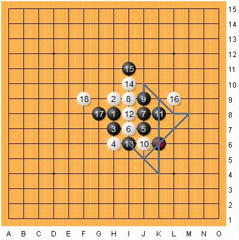

松月的这个白8之后,黑该怎么杀?(我初学下棋,有点笨哦,大家不要笑我)
#1 松月的这个白8之后,黑该怎么杀?(我初学下棋,有点笨哦,大家不要笑我) 作者：新手下棋 发表时间：2010-3-17 0:40:20
=======上图对应的爱五子棋谱代码如下，以便你拆解：========
h8h9h7h6j7i7j8i9
======================================================
#2 Re:松月的这个白8之后,黑该怎么杀?(我初学下棋,有点笨哦,大家不要笑我) 作者：淡红的秋樱 发表时间：2010-3-17 0:46:39
=======上图对应的爱五子棋谱代码如下，以便你拆解：========
h8h9i10j10i8j9
======================================================
和这个差不太多吧
#3 Re:Re:松月的这个白8之后,黑该怎么杀?(我初学下棋,有点笨哦,大家不要笑我) 作者：新手下棋 发表时间：2010-3-17 1:10:34
引用：楼上的,能教教我具体怎么杀吗?拆了半天也没拆出来,用黑石也没帮上忙.感觉我发的这个跟你的不太一样吧.其实好像这个应该很好杀的,给个思路也行啊.
原文由 淡红的秋樱 发表于 2010-3-17 0:46:39 :
=======上图对应的爱五子棋谱代码如下，以便你拆解：========
h8h9i10j10i8j9
======================================================和这个差不太多吧
#4 Re:松月的这个白8之后,黑该怎么杀?(我初学下棋,有点笨哦,大家不要笑我) 作者：蓝色羚羊 发表时间：2010-3-17 8:13:26
这个局面应该不是很难吧
=======上图对应的爱五子棋谱代码如下，以便你拆解：========
h8h9h7h6j7i7j8i9j9
======================================================
=======上图对应的爱五子棋谱代码如下，以便你拆解：========
h8h9h7h6j7i7j8i9j9j10g8
======================================================
=======上图对应的爱五子棋谱代码如下，以便你拆解：========
h8h9h7h6j7i7j8i9j9j6k8
======================================================
#5 Re:松月的这个白8之后,黑该怎么杀?(我初学下棋,有点笨哦,大家不要笑我) 作者：屏蔽 发表时间：2010-3-17 11:31:46
=======上图对应的爱五子棋谱代码如下，以便你拆解：========
h8h9h7h6j7i7j8i9j9j6k8i8i6i10i11l9g8f9k6
======================================================
#6 Re:Re:松月的这个白8之后,黑该怎么杀?(我初学下棋,有点笨哦,大家不要笑我) 作者：新手下棋 发表时间：2010-3-17 12:38:18
引用：哦,我会了,这个19果然不错,屏蔽你怎么想到的?真厉害!
原文由 屏蔽 发表于 2010-3-17 11:31:46 :
=======上图对应的爱五子棋谱代码如下，以便你拆解：========
h8h9h7h6j7i7j8i9j9j6k8i8i6i10i11l9g8f9k6
======================================================
#7 Re:松月的这个白8之后,黑该怎么杀?(我初学下棋,有点笨哦,大家不要笑我) 作者：屏蔽 发表时间：2010-3-17 13:44:16

把能想到的线路交汇起来就有了。
#8 Re:松月的这个白8之后,黑该怎么杀?(我初学下棋,有点笨哦,大家不要笑我) 作者：yoda 发表时间：2010-3-19 10:21:39
=======上图对应的爱五子棋谱代码如下，以便你拆解：========
h8h9h7h6j7i7j8i9i8g8k10j9k8l8k9k11l9m10k6k7j6
======================================================
这样也成立。